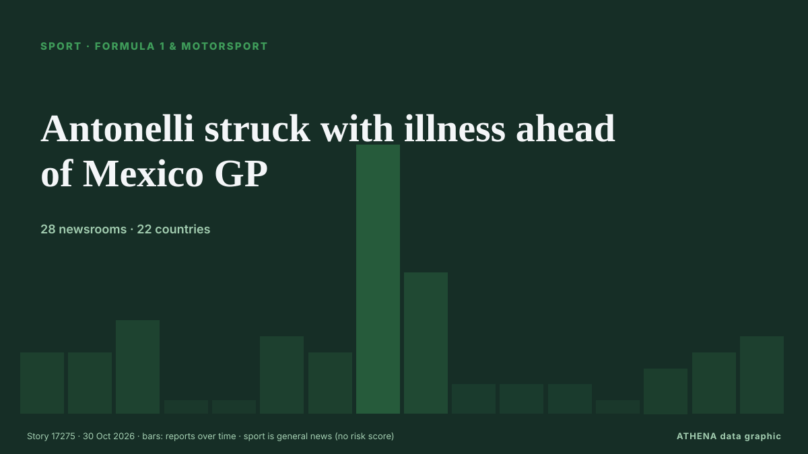

СпортТитульная карточка. 28 СМИ в 22 странах Освещение: сообщений за 12 ч
Antonelli struck with illness ahead of Mexico GP

Коротко
Независимые источники: 28 изданий в 22 странах, с 22 окт.; первым сообщил Arab News; освещение идёт на спад. Спорт и культура публикуются без оценки риска. Уверенность — 92 % (высокая); подтверждают независимые источники: 28 изданий, средняя надёжность источников — 74 %.
Что изменилось: 7 новых сообщений от 7 редакций за 24 часа до 30 окт..
Первый заголовок: Antonelli wins US Grand Prix but must wait for title
Заголовки приводятся на английском языке, как они были опубликованы.
Коротко в цифрах
6.3Значимость
—Без оценки риска
92%Уверенность
Отобрано, оценено и написано по опубликованной методологии ATHENA. Ни один редактор не вмешивается в отдельные события. Как это создаётся ›
| 22 Oct 04:32 UTC | 3 |
|---|---|
| 22 Oct 16:32 UTC | 3 |
| 23 Oct 04:32 UTC | 5 |
| 23 Oct 16:32 UTC | 0 |
| 24 Oct 04:32 UTC | 0 |
| 24 Oct 16:32 UTC | 4 |
| 25 Oct 04:32 UTC | 3 |
| 25 Oct 16:32 UTC | 16 |
| 26 Oct 04:32 UTC | 8 |
| 26 Oct 16:32 UTC | 1 |
| 27 Oct 04:32 UTC | 1 |
| 27 Oct 16:32 UTC | 1 |
| 28 Oct 04:32 UTC | 0 |
| 28 Oct 16:32 UTC | 2 |
| 29 Oct 04:32 UTC | 3 |
| 29 Oct 16:32 UTC | 4 |
Откуда эти цифры
Значимость
Охват — страны, где об этом пишут
Широта — разные издания
Новизна
Списки наблюдения
Разнообразие — регионы и типы СМИ
Риск
—
Уверенность
Независимые издания
Надёжность источников
Страны
Стабильность
Согласованность классификации
Освещение — кто сообщил и когда
заголовок в оригинале · открывает источник- Arab News · Саудовская Аравия · Saudi ArabiaVerstappen bids to delay Antonelli’s F1 coronation in US
- Express Tribune · Пакистан · PakistanVerstappen bids to delay Antonelli's F1 coronation
- The National · ОАЭ · United Arab EmiratesF1 title race explained: What Kimi Antonelli needs to become champion at the United States Grand Prix
- Taipei Times · Тайвань · TaiwanVerstappen seeks to delay Antonelli’s F1 coronation
- Express Tribune · Пакистан · PakistanAntonelli eyes perfect weekend in title bid
- Times of India · Индия · IndiaCan Kimi Antonelli clinch the F1 2026 title in Austin?
- The National · ОАЭ · United Arab EmiratesF1 power rankings and US GP predictions: Verstappen eyes hat-trick while Antonelli has title in grasp
- The Rio Times · Бразилия · BrazilUS Grand Prix Weekend Opens in Austin
- Daily Maverick · Южно-Африканская Республика · South AfricaTITLE BECKONS: Maiden Formula One title in sight for phenom Kimi Antonelli
- Cyprus Mail · Кипр · Cyprus‘Slow down’: Hamilton jokes to champion-in-waiting Antonelli
- The Rio Times · Бразилия · BrazilAntonelli Can Clinch F1 Title in Austin
- Jamaica Observer · Ямайка · JamaicaHamilton on top with Antonelli fourth in final practice at US Grand Prix
- CNA (Channel NewsAsia) · Сингапур · SingaporeAntonelli on pole for US Grand Prix with F1 title in sight
- ABC News Australia · Австралия · AustraliaAntonelli on pole as he eyes record-setting world F1 title
- The Rio Times · Бразилия · BrazilAntonelli Takes Austin Pole, Eyes F1 Title
- Jamaica Observer · Ямайка · JamaicaAntonelli storms to US Grand Prix pole on weekend he can take title
- Asharq Al-Awsat (English) · Саудовская Аравия · Saudi ArabiaVerstappen’s Advice to Antonelli: Enjoy the Ride and Celebrate
- Nile Post · Уганда · UgandaAntonelli stands on brink of history in Austin
- The Irish News (Belfast) · Великобритания · United KingdomKimi Antonelli moves to brink of F1 title with United States Grand Prix win
- Cyprus Mail · Кипр · CyprusAntonelli on brink of title after winning US Grand Prix
- CNA (Channel NewsAsia) · Сингапур · SingaporeAntonelli wins US Grand Prix but must wait for title
- Evening Standard (London) · Великобритания · United KingdomKimi Antonelli's wait for maiden F1 title extended despite winning United States Grand Prix
- NL Times · Нидерланды · NetherlandsMax Verstappen takes third in Austin as Kimi Antonelli closes in on F1 title
- The Namibian · Намибия · NamibiaAntonelli wins US Grand Prix to close on world title
- The Korea Times · Республика Корея · South KoreaKimi Antonelli wins dominant US Grand Prix, tightens grip on historic F1 title chase
- The Irish News (Belfast) · Великобритания · United KingdomKimi Antonelli aiming to complete his F1 title march in style in Mexico City
- Anadolu Agency (English) · Турция · TurkeyAntonelli misses out on clinching F1 title despite dominant US Grand Prix win
- ABC News Australia · Австралия · AustraliaAntonelli is two points away from the F1 title, and can win it next week
- Express Tribune · Пакистан · PakistanAntonelli wins US Grand Prix
- Arab News · Саудовская Аравия · Saudi ArabiaKimi Antonelli wins US Grand Prix and tightens his grip on historic F1 title chase
- Jamaica Observer · Ямайка · JamaicaAntonelli wins US Grand but title triumph has to wait another week
- The National · ОАЭ · United Arab EmiratesKimi Antonelli wins US Grand Prix to move within touching distance of F1 title
- Oman Observer · Оман · OmanAntonelli wins US Grand Prix but must wait for title
- Nile Post · Уганда · UgandaAntonelli wins in US but has to wait to secure title
- Türkiye Today · Турция · TurkeyKimi Antonelli wins US Grand Prix but F1 title celebration put on hold
- Cyprus Mail · Кипр · CyprusAntonelli wins US Grand Prix but must wait for title
- The Irish News (Belfast) · Великобритания · United KingdomGeorge Russell says second spot would mean nothing as Kimi Antonelli nears title
- IOL · Южно-Африканская Республика · South AfricaAntonelli on brink of securing Drivers’ Championship crown with United States GP win
- Al Jazeera English · Катар · QatarKimi Antonelli wins US Grand Prix, closes in on F1 championship
- ANSA English · Италия · ItalyF1: Antonelli two points from title after winning United States Grand Prix